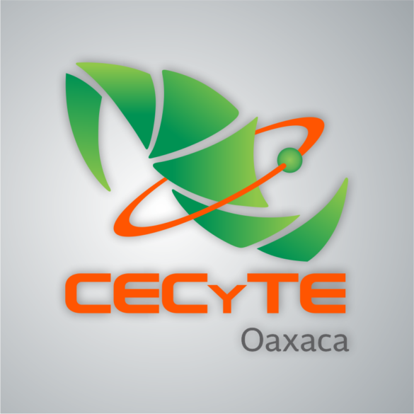
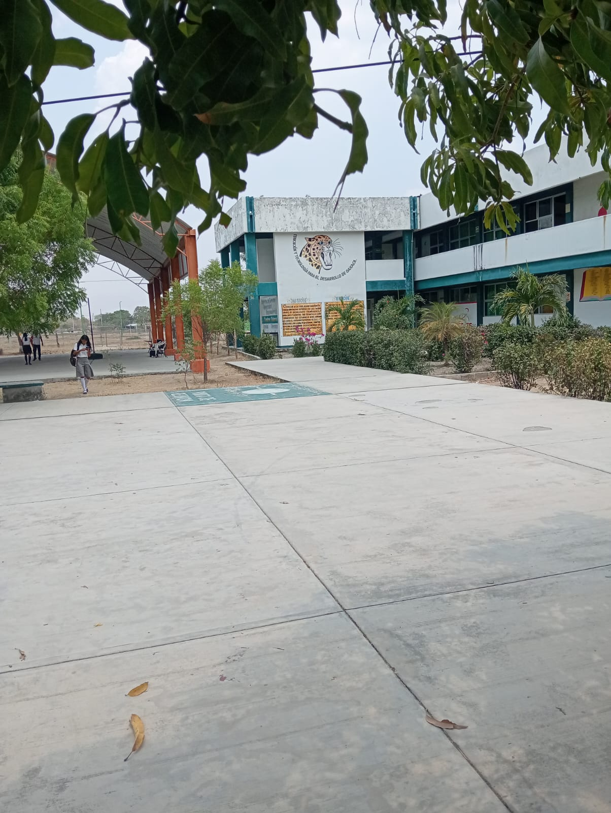

CECYTEO:
El colegio de estudios cientificos y tecnologicos del estado de oaxaca (CECyTEO), es una institucion de caracter oficial, creada el 12/08/1993, que brinda educacion media superior en las modalidades de bachillerato general, cuyo objetivo es propiciar el desempeño de los egresados a la vida profesional, en funcion a las caracteristicas y necesidades especificas de cada region y el desarrollo socioeconomico del estado de oaxaca.

ESPECIALIDADES:
PROGRAMACION: Ofrece las competencias profesionales que permiten al estudiante realizar actividades dirigidas a: analizar, diseñar, desarrollar, instalar y mantener software de aplicacion tomando como base los requerimientos del usuario.
LOGISTICA: Permiten al estudiante realizar actividades dirigidas a la administracion de bienes. planificando los suministros destinados al almacenamiento de manera manual y electronica.
